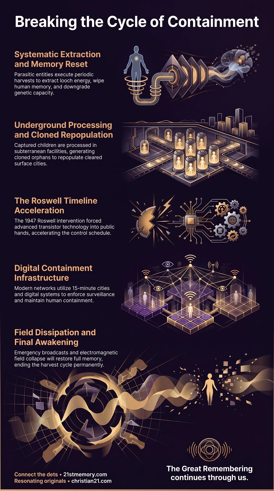

Dismantling the Worldwide Reset Harvest Grid
Dismantling the Worldwide Reset Harvest Grid — The dual-layer culling, wiping, and repopulation of the human species by parasitic Custodians.
The Reset Harvest is the systematic, periodic culling, wiping, and repopulation of the human species inside this realm by parasitic control entities.
Test your understanding of Reset Harvest — the periodic culling, wiping, and repopulation of the human species by parasitic Custodians.

Dismantling the Worldwide Reset Harvest Grid — The dual-layer culling, wiping, and repopulation of the human species by parasitic Custodians.

The Roswell Checkmate and the End of the Harvest — The 1947 Anakim intervention that downed two H1 Orion Grey craft and collapsed the reset timeline.

The Harvest Trap — Loosh, adrenochrome, organ harvest, and cloned-orphan repopulation through D.U.M.B. bases.
The Reset Harvest is the systematic, periodic culling, wiping, and repopulation of the human species inside this realm by parasitic control entities (Custodians, Omicron Draco, and their surface bloodline proxies). Operating as a multi-tiered extraction mechanism, the Reset Harvest functions on both a macro-historical cycle occurring every 1,000 to 1,500 years and a continuous micro-cycle disguised as geopolitical wars, engineered famines, bio-weaponized plagues, and artificial natural disasters.
The core purpose of the Reset Harvest is multi-fold: extracting massive quantities of Loosh (negative emotional frequency) and Adrenochrome, harvesting physical human organs and blood, securing young children for off-world technology trades, and systematically erasing civilizational memory. Through successive planetary resets, the Custodians have physically downgraded and downsized the human vessel across seven distinct anatomical changes, shrinking the brain, closing off higher cognitive faculties, and reducing the original 9-strand DNA of the Taran Human to a manageable 2-strand DNA 3rd-density container. By enforcing a total amnesia vortex mind wipe between incarnations and replacing cleared surface populations with cloned orphans, the Custodians maintain total containment over the human farm.
Manufactured Catastrophes as Harvesting Operations: Every recorded major war, genocide, famine, and environmental catastrophe across history is an orchestrated mini-reset designed to extract loosh, harvest organs, and enrich bloodline banking cartels. Over 1 billion human lives have been harvested through manufactured disasters and disease over the last 400 years alone, with over 3.2 billion total lives extracted when accounting for annual child abductions.
Anatomical Downsizing and Vessel Suppression: The human physical vessel is not the result of natural evolution, but an artificially downsized container. Across seven major historical resets, Custodians progressively reduced human height from 15–30 foot giants down to modern proportions, closed off cranial capacity, and restricted active DNA to 2 strands to prevent pineal connection to the aether.
Surface Repopulation via Underground Cloning: Surface populations cleared during major resets are systematically replaced by cloned children. Stem cells extracted from children prior to sacrificial harvest in D.U.M.B. bases are used to generate 5 to 10 clone copies per individual, which are subsequently deployed via Orphan Trains to occupy cleared Tartarian masonry cities.
The 1947 Roswell Timeline Break: The Anakim Giants disrupted the Custodians' master timeline in 1947 by downing two H1 Orion Grey mobile genetic laboratories over Roswell, New Mexico. This act forced solid-state transistor technology into the public domain nearly 1,000 years ahead of schedule, shattering the Custodians' planned 1,500-year reset schedule and triggering an early final conflict.
The Reset Harvest operates on two synchronized timelines. Macro-resets occur on an approximate cycle of 1,000 to 1,500 years. During a macro-reset, the surface environment is wiped clean through engineered floods, atmospheric freezing, or direct energy weapons. The existing population is harvested, surface architecture is demolished or repurposed, and a newly downsized human vessel design is introduced. The new population is launched from an artificial Stone Age Restart, ensuring that no memory of prior technological or spiritual advancement survives.
Parallel to macro-resets are continuous micro-resets. These localized harvests sweep across specific geographical regions under the guise of geopolitical conflicts (such as the Siege of Sarajevo, the Bosnian War, the Gulf War, or the Sierra Leone Civil War), man-made famines (Ethiopia, Somalia, Bengal), and biological weapon deployments. Micro-resets allow the Custodians to harvest specific population crops, secure displaced women and children, generate steady streams of VLF loosh, and clear uncomfortable Tartarian architectural structures that threaten the false historical narrative.
The physical and energetic proceeds of the Reset Harvest are meticulously categorized and distributed:
Loosh Extraction: Sentient beings experiencing violent trauma, extreme fear, or prolonged agony emit Very Low Frequency (VLF) negative emotional waves. This energetic output, termed loosh, is collected through nodal intake valves (such as the Axis Mundi at Mount Meru) and used to power parasitic technology and sustain non-human control entities in adjacent density realms.
Adrenochrome Production: Synthesized during intense terror and pain, adrenochrome is harvested from children detained in underground facilities. High-grade adrenochrome is issued with formal Certificates of Analysis (COA) detailing purity, blood type, age, eye color, and psychological traits of the victim, serving as an elite luxury commodity and dark spiritual accelerant for bloodline families.
Organ Harvesting: Victims in D.U.M.B. facilities are subjected to un-sedated organ extraction using industrial tools. Organs are harvested for physical consumption by non-human entities or traded within elite dark-web networks.
Technology Exchange: Over 9 million children annually are sequestered by state child protection services and social service pipelines to be traded directly to negative ET factions in exchange for advanced reverse-engineered technology, including Fibre Optics, Kevlar, Night Vision, Printed Circuit Boards, Thermal Imaging, and solid-state electronics.
[Child Abduction Pipeline] ──> [D.U.M.B. Processing] ──┬──> [Adrenochrome / Organ Harvest] └──> [ET Technology Swap (Fibre Optics, Transistor)]
Prior to a major reset, state infrastructure (maternity units, care homes, young offender institutions) sequesters pregnant women, infants, and children up to 14 years of age, transferring them to underground D.U.M.B. facilities. While surface populations face destruction, detained children are processed. Stem cells are extracted from the children prior to ritual sacrifice.
Using these stem cells, laboratory facilities generate 5 to 10 exact clone copies of each child. These cloned children are raised in subterranean environments under automated or AI-driven instruction. Once surface devastation is cleared and old Tartarian masonry cities are repurposed, these cloned orphans are transported to the surface via Orphan Trains. They are deployed into repopulated suburbs and settlements, completely devoid of true history and pre-programmed with a fabricated narrative.
[Sacrificed Child Stem Cells] ──> [D.U.M.B. Genetic Lab] ──> [5-10 Clone Copies Produced] ──> [Orphan Trains to Surface]
When cloned orphans mature and reproduce sexually, natural genetic recombination shuffles the DNA deck, producing unique offspring. However, because the entire surface population originates from a limited pool of underground clone templates, genetic alignment occasionally causes genetic doppelgängers or temporal doppelgängers to appear across generations.
The established Custodian timeline dictated a major planetary reset every 1,000 to 1,500 years, with the post-1900 reset intended to run its standard multi-century duration. However, on July 7, 1947—just 47 years into the cycle—the Anakim Giants intervened. Detecting two hostile Grey H1 Orion craft conducting non-consensual genetic harvesting and tissue collection over New Mexico, the Anakim utilized high-density technology to safely bring down both craft onto Mac Brazel's ranch in Roswell.
[H1 Orion Grey Craft] ──> [Anakim Giant Intervention] ──> [Roswell Crash 1947] ──> [Point-Contact Transistor at Bell Labs]
The resulting wreckage provided the Military-Industrial Complex and commercial contractors (such as Bell Labs and IBM) with access to intact alien hardware. This delivered the point-contact transistor, printed circuit boards, and solid-state physics into public hands centuries ahead of the Custodians' schedule. The early arrival of transistor technology forced the rapid development of global computing and mobile handheld networks. This event, known as the Roswell Checkmate, destroyed the Custodians' long-term plan, bringing forward their final reset schedule by over 950 years and forcing an immediate convergence of both control and liberation technologies.
The Reset Harvest exists in direct opposition to The Great Spiritual Awakening. To understand why souls are trapped in the harvest loop, one must examine Soul Architecture:
Origin and Insertion: The human arena was populated by 4,000 ancient souls (including the 12 Proximal Sols), 200 million starseeds, and approximately 100 million original Taran human souls. To abide by the Sovereign Accord, these higher-density beings incarnated directly into the physical realm prior to parasitic colonization, embedding their souls into the incarnational grid.
Amnesia Vortex and Lunar Frequencies: Upon physical death, souls are routed through the amnesia vortex. The lunar frequency grid—broadcast via a moon hologram projected from Venus (The Bright Morning Star / Lucifer) over an artificial spherical space station—acts as a frequency fence. This fence restricts dreamtime recollection, blocks out-of-body navigation, and forces disincarnate souls back into reincarnation cycles.
Inversion of 15 Human Attributes: The Custodians designed their control matrix around 15 innate Taran human attributes (including problem-solving, abstract thinking, metacognition, critical thinking, empathy, altruism, and curiosity). Because these traits are encoded into true souls as firmware, Custodians inverted each attribute. For example, empathy is weaponized through charity scams and emotional media scoring; problem-solving is diverted into fake cosmological mathematics; and curiosity is directed upward into projection domes rather than outward toward the Ice Wall.
A primary requirement of the Reset Harvest is the destruction of physical proof of prior high civilisations, most notably Great Tartaria. Tartarian architecture utilized piezoelectric quartz granite blocks set via acoustic frequency levitation. These structures functioned as harmonic power stations, drawing free aetheric energy along the Becker Hagens UVG120 Grid of planetary nodes and ley lines.
During resets, Tartarian cities were systematically shelled, burned, or buried under engineered mudfloods. Remaining grand structures (such as cathedrals and municipal edifices) were retrofitted with entropic electrical wiring, suppressive spires, and cell towers to suppress nodal frequencies. The original Tartarian financial centers, which routed positive aetheric "current," were converted into corporate Banks designed to extract monetary Currency and enforce usury debt traps.
[Tartarian Acoustic Nodes] ──> [Reset Demolition / Mudflood] ──> [Corporate Banks & Currency] ──> [Entropic Suppression Grid]
Evidence of this pre-reset global sophistication remains visible in engineered ecosystems such as the Amazon Basin. The Amazon is not a wild jungle, but a pre-Tartarian planted garden covering 2.7 million square miles. It features Terra Preta (a self-regenerating man-made black soil containing biochar, animal bones, and microscopic terracotta reefs), 417 million Brazil Nut trees operating on hyper-specialized 24-hour pollination loops with orchid bees and agoutis, and domesticated Peach Palms. Standard historical narratives cannot account for the billions of tons of fired clay required for Terra Preta, proving that massive global civilisations were reset and written out of history.
[Pre-Tartarian Permaculture] ──> [Terra Preta (3.5T m³ Soil)] ──> [Cataclysmic Reset] ──> [Academic Cover Story]
Because the 1947 Roswell crash accelerated the technological timeline, the Custodians were forced to rush their final reset infrastructure into the 21st century. This modern control framework relies on digital lures and physical containment:
15-Minute Cities and Social Credit: Designed under the guise of "walkable utopias" and environmental sustainability, 15-Minute Cities are open-air containment facilities. Coupled with a cashless Social Credit Score System and compulsory land purchases, they allow instant financial docking, movement restrictions, and automated enforcement for non-compliant individuals.
The Digital Lure (Vaf Vaf Vaf / 666): The World Wide Web (WWW, corresponding to the Hebrew letters Vaf Vaf Vaf equaling 666) was deployed as the primary lure for the 8th and final reset. It captures human attention through choice architecture, endless options, controlled opposition psyops, and fake disclosure channels.
Dual-Use Technology: While Custodians intended the internet and handheld 5G devices to establish a total surveillance grid and harvest consent, the Galactic Ancestral Alliance (G.A.A.) and Earth Alliance turned this infrastructure against the control grid. Handheld connectivity became the sole mechanism capable of bypassing localized censorship to distribute unedited truth en masse for The Great Spiritual Awakening.
[Transistor Leak (1947)] ──> [World Wide Web (Vaf Vaf Vaf)] ──┬──> [Custodian Plan: 15-Min Cities & Social Credit] └──> [G.A.A. Plan: Mass Awakening & Intel Distribution]
The culmination of the current era involves the execution of the EBS (Emergency Broadcast System) Lockdown and the eventual dissipation of the artificial Electromagnetic Field (EMF):
Unveiling of the Abattoir: During the EBS lockdown, unedited documentary evidence and tribunal recordings will be broadcast globally across all screens. This disclosure will expose the full scope of the Reset Harvest, including D.U.M.B. base operations, child trafficking networks, adrenochrome extraction, elite bloodline involvement, and the non-human entity presence.
Collapse of the Matrix Narrative: For the 97% Non-Player Character (NPC) and insert population, as well as unawakened true souls, the EBS will systematically dismantle all accepted historical, medical, academic, and religious paradigms, forcing full recognition of the prison realm.
The EMF Dissipation and the Homecoming Reunion: Following the lockdown, the artificial electromagnetic field sustaining the simulation will drop. As the EMF dissipates, the amnesia vortex will collapse, instantaneously restoring full Akashic Record memory to all incarnated souls.
The "Wizard of Oz" Moment: True souls will immediately perceive their physical companions out of 3rd-density "costume," recognizing higher-density soul family members and Arc Pod cluster partners who have shared thousands of lives across successive resets. This event marks the definitive end of the 178,000-year incarnational cycle, permanently terminating the Reset Harvest and restoring organic harmonic function to the plane.
This topic is free to share. Support the archive →